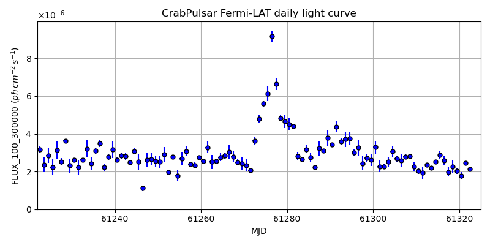
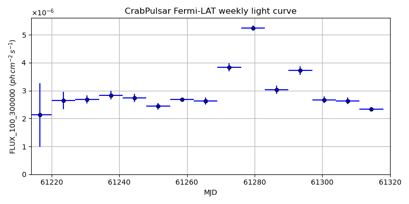
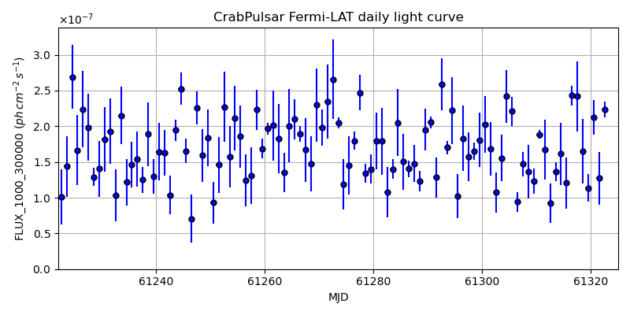
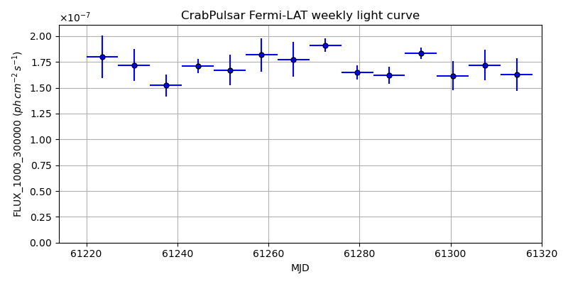

LAT Lightcurve site: https://fermi.gsfc.nasa.gov/ssc/data/access/lat/msl_lc/source/Crab_Pulsar
NED: Query
Time of last update of this page: UT: 2026-10-10 15:17 (MJD: 61323.637)
| Property | Value |
|---|---|
| R.A. | 5:34:31.92 |
| Dec. | 22:00:50.4 |
| z | 0.000 |
| 3FGL SpectrumType | |
| 3FGL PL Index | -1.00 |
| 3FGL Flux_100_300000 | -1.00e+00 |
| 3FGL Flux_1000_300000 | -1.00e+00 |
| 3FGL Flux >200 GeV | -1.00e+00 |
| 3FGL Extrap. Crab >200 GeV | -1.00 |
| 3FGL Flux After EBL Absorption >200GeV | -1.00e+00 |
| 3FGL EBL Crab Fraction >200GeV | -1.00 |

| MJD | dMJD | Flux | dFlux | Frac3FGL | FracCrab>200GeV | EBLFracCrab>200GeV |
|---|---|---|---|---|---|---|
| 61318.50 | 0.50 | 2.27e-06 | 0.00e+00 | 0.00 | 0.00 | -0.00 |
| 61319.50 | 0.50 | 2.02e-06 | 0.00e+00 | 0.00 | 0.00 | -0.00 |
| 61320.50 | 0.50 | 1.77e-06 | 0.00e+00 | 0.00 | 0.00 | -0.00 |
| 61321.50 | 0.50 | 2.46e-06 | 0.00e+00 | 0.00 | 0.00 | -0.00 |
| 61322.50 | 0.50 | 2.14e-06 | 0.00e+00 | 0.00 | 0.00 | -0.00 |

| MJD | dMJD | Flux | dFlux | Frac3FGL | FracCrab>200GeV | EBLFracCrab>200GeV |
|---|---|---|---|---|---|---|
| 61286.50 | 3.50 | 3.03e-06 | 0.00e+00 | 0.00 | 0.00 | -0.00 |
| 61293.50 | 3.50 | 3.72e-06 | 0.00e+00 | 0.00 | 0.00 | -0.00 |
| 61300.50 | 3.50 | 2.67e-06 | 0.00e+00 | 0.00 | 0.00 | -0.00 |
| 61307.50 | 3.50 | 2.63e-06 | 0.00e+00 | 0.00 | 0.00 | -0.00 |
| 61314.50 | 3.50 | 2.34e-06 | 0.00e+00 | 0.00 | 0.00 | -0.00 |

| MJD | dMJD | Flux | dFlux | Frac3FGL | FracCrab>200GeV | EBLFracCrab>200GeV |
|---|---|---|---|---|---|---|
| 61318.50 | 0.50 | 1.65e-07 | 0.00e+00 | 0.00 | 0.00 | -0.00 |
| 61319.50 | 0.50 | 1.14e-07 | 0.00e+00 | 0.00 | 0.00 | -0.00 |
| 61320.50 | 0.50 | 2.12e-07 | 0.00e+00 | 0.00 | 0.00 | -0.00 |
| 61321.50 | 0.50 | 1.27e-07 | 0.00e+00 | 0.00 | 0.00 | -0.00 |
| 61322.50 | 0.50 | 2.23e-07 | 0.00e+00 | 0.00 | 0.00 | -0.00 |

| MJD | dMJD | Flux | dFlux | Frac3FGL | FracCrab>200GeV | EBLFracCrab>200GeV |
|---|---|---|---|---|---|---|
| 61286.50 | 3.50 | 1.62e-07 | 0.00e+00 | 0.00 | 0.00 | -0.00 |
| 61293.50 | 3.50 | 1.84e-07 | 0.00e+00 | 0.00 | 0.00 | -0.00 |
| 61300.50 | 3.50 | 1.62e-07 | 0.00e+00 | 0.00 | 0.00 | -0.00 |
| 61307.50 | 3.50 | 1.72e-07 | 0.00e+00 | 0.00 | 0.00 | -0.00 |
| 61314.50 | 3.50 | 1.63e-07 | 0.00e+00 | 0.00 | 0.00 | -0.00 |
--------------------------------------------------------- Using user-supplied coords: 5:34:31.92 22:00:50.4 2000 --------------------------------------------------------- FLWO UT night of: 2026-10-11 Local Sid. @ Midnight: 00:55 Sunset (-15.0) (local, UT): 19:04 02:04 Sunrise (-15.0) (local, UT): 05:18 12:18 Moonrise (local, UT): Moonset (local, UT): Moon phase: 0.01 --------------------------------------------------------- AzTime LSID UT Obj_el Obj_az Mn_el Mn_az Sep. --------------------------------------------------------- 19:04 19:58 02:04 -26.3 37.1 -16.1 264.2 117.6 19:34 20:29 02:34 -22.2 43.3 -22.3 267.8 117.9 20:04 20:59 03:04 -17.6 48.8 -28.5 271.5 118.2 20:34 21:29 03:34 -12.6 53.9 -34.7 275.4 118.5 21:04 21:59 04:04 -7.2 58.5 -40.8 279.7 118.8 21:34 22:29 04:34 -0.9 62.7 -46.8 284.6 119.1 22:04 22:59 05:04 4.3 66.6 -52.7 290.5 119.5 22:34 23:29 05:34 10.1 70.2 -58.4 297.7 119.8 23:04 23:59 06:04 16.2 73.7 -63.6 307.3 120.2 23:34 00:29 06:34 22.3 77.1 -68.1 320.3 120.5 00:04 00:59 07:04 28.6 80.5 -71.3 338.2 120.9 00:34 01:29 07:34 34.9 83.9 -72.6 0.4 121.2 01:04 01:59 08:04 41.3 87.4 -71.5 22.7 121.6 01:34 02:30 08:34 47.7 91.3 -68.3 40.8 121.9 02:04 03:00 09:04 54.1 95.8 -63.9 54.1 122.3 02:34 03:30 09:34 60.4 101.2 -58.7 63.8 122.7 03:04 04:00 10:04 66.6 108.4 -53.1 71.2 123.0 03:34 04:30 10:34 72.5 119.3 -47.3 77.2 123.4 04:04 05:00 11:04 77.5 138.3 -41.4 82.2 123.7 04:34 05:30 11:34 80.3 172.3 -35.3 86.6 124.0 05:04 06:00 12:04 78.9 210.9 -29.2 90.6 124.3 05:18 06:14 12:18 77.2 223.6 -26.5 92.4 124.5 --------------------------------------------------------- Dark hours >55 deg.: 3.15 srcstart (UT): 2026-10-11 09:08 srcend (UT): 2026-10-11 12:17